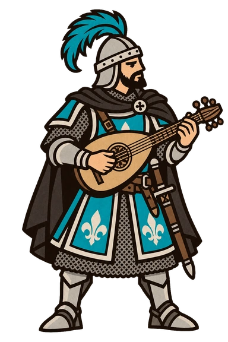

Kulturklassen · Brevanor
04 / 07
Kampfbarde · Brevanor
Der Cantrel
Kampfbarde
Inhalt & Brevanor-Klassen
Klassenprofil in Vorbereitung
Name und Rolle dieser Klasse sind festgelegt. Die einzelnen Kapitel werden noch ausgearbeitet.
Brevanor · Titel und Rangfolge
Die brevanorische Adelshierarchie
Die vorgegebene Rangfolge vom Riël bis zum Pajet. Adelstitel und Klassenbezeichnungen werden getrennt geführt.
Die elf Ränge
-
01
Rang 1
Riël
König -
02
Rang 2
Arduen
Herzog -
03
Rang 3
Arvor
Fürst -
04
Rang 4
Comteyr
Graf -
05
Rang 5
Vicon
Vizegraf -
06
Rang 6
Brenor
Baron -
07
Rang 7
Chastor
Ritterfürst -
08
Rang 8
Bannor
Ritterlicher Herr, Bannerherr -
09
Rang 9
Cavalier
Einfacher Ritter -
10
Rang 10
Gentry
Knappe -
11
Rang 11
Pajet
Page
Riël↓Arduen↓Arvor↓Comteyr↓Vicon↓Brenor↓Chastor↓Bannor↓Cavalier↓Gentry↓Pajet
Offene Kapitel 10
Diese Teile des Klassenprofils werden noch ergänzt.
- Einführung
- Geschichte
- Fähigkeiten
- Stärken & Schwächen
- Kampfstil & Kampfkunst
- Ausstattung
- Kultureller Status
- Unterarten
- Verschiedenes
- Historische Figuren